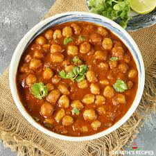

Veggie Chickpea and Spinach Curry

This recipe is for a vegetarian curry using spinach and Chickpeas, cooked in a creamy sauce. It is ready in less than 30 minutes and is great for batch cooking.
Ingredients
The ingredients for the recipe are:
- Frozen Spinach (one medium)
- Chickpeas (one or two tins)
- Rice
- Naan (optional, to serve)
Steps
- Drain chickpeas and rinse
- Add chickpeas and spinach to the pan on a medium-high heat
- Serve with rice and naan bread (if you want a bit more to eat)